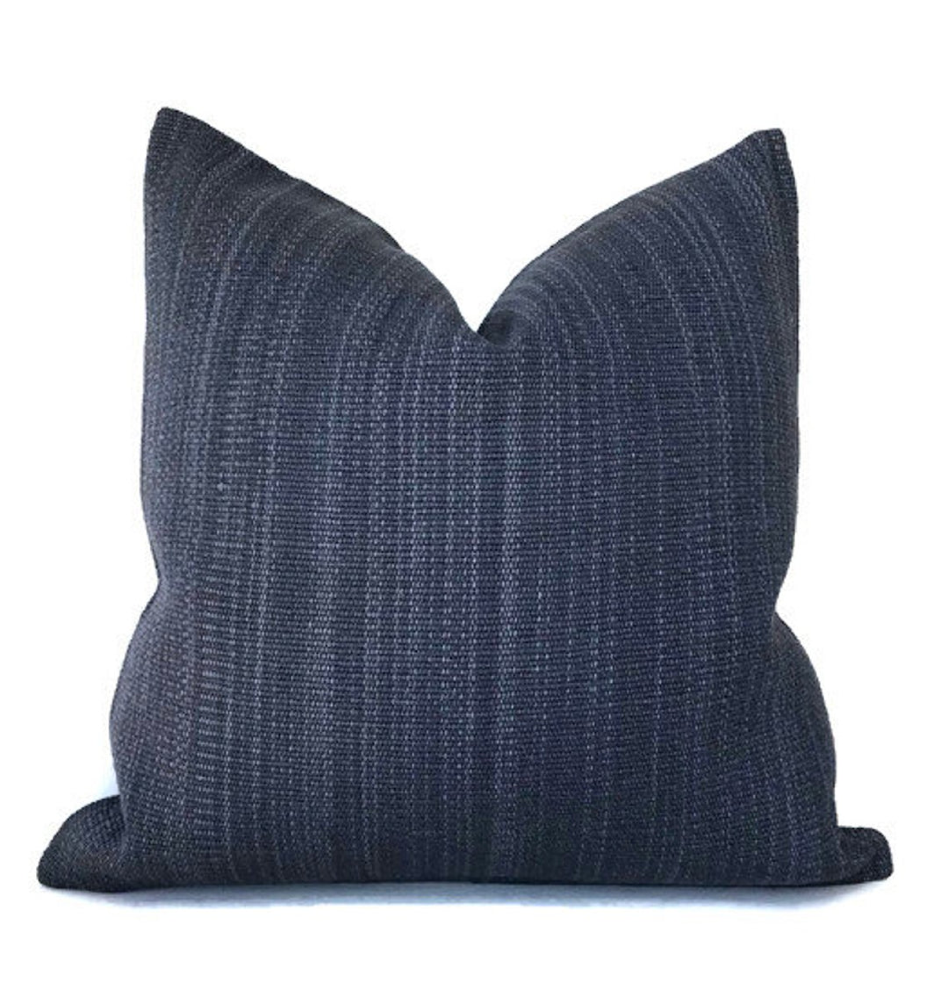
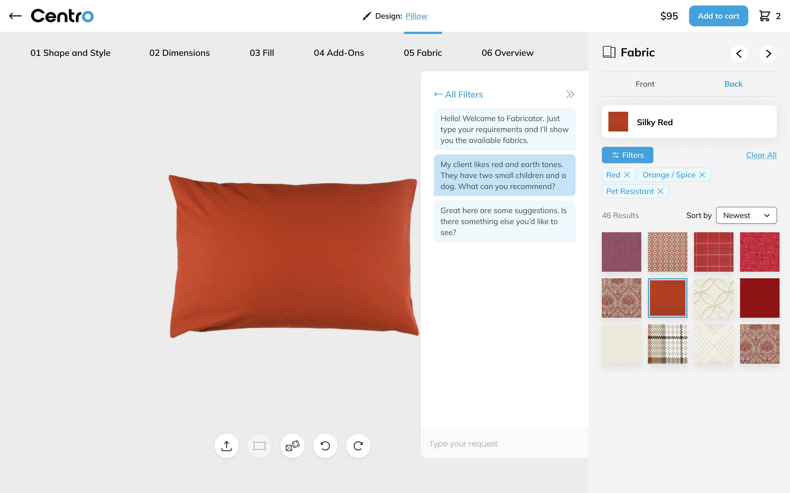

Custom Pillow Configuration: Adding Value Through Discovery
Role: Product designer
Timeline: July 2023 - August 2023

Overview
Centro is one of our clients, for whom we built a pillow configurator. They took part in a startup accelerator programme and wanted to integrate AI as part of their pitch. We helped them with this integration with the goal of further collaboration. This case study explores how we did a super fast AI integration, UI improvements to make filers more usable and the discovery learnings we have been gathering in preparation for the next phase of the project.
Finding the Users
Our PM Lara had been doing a great job helping Centro with their positioning and learning about the business to help them achieve product market fit.
When I joined the project, interviews with the target users had been going on and we knew they were interior designers working in partnership with Centro.
Process
I started by diving deep in what had been gathered about the users. Since we had only two weeks for discovery and design, we had to run on some assumptions. I kept a record of everything so we could validate them later.
I also researched the AI space in order to find patterns and best practices. I documented these learnings so we could start an internal shared knowledge of AI usability and best practices.
Hypothesis Problem Statement
Designers need a way to process several constraints, requests a considerations (eg. room size, budget, purpose for the space, client’s lifestyle, client’s preferences, etc.) in order to find the right fabrics and create a proposal for their clients.
Design
At this stage, we landed on a simple implementation where users could apply filters using natural language. This allowed them to go from a list of requests to seeing the most relevant fabrics for their project, addressing the initial problem statement. We had to scope down the features due to time constraints, but continued the discovery so we could find where to deliver more value with the next iteration.
Conclusion
We continued the discovery, which consisted of interviewing interior designers, and gathered a ton of insights into their process. It was extremely valuable to have such a close connection with the end-users, who were super motivated to speak with us and help us improve the product. We plan to continue this work and use the insights to deliver a valuable AI feature for interior designers.